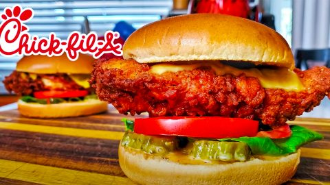

Chick-Fil-A Spicy Chicken Sandwich

Chick-Fil-A Spicy Chicken Sandwich Copycat Recipe
This is a copycat recipe for the beloved Chick-Fil-A spicy chicken sandwich.
Ingredients
Chick-fil-A Spicy Chicken Sandwich Ingredients:
- 4 chicken breast, halved
- 1/2 cup pickle juice
- 1/4 cup water
- 1/2 cup milk
- 1 large egg
- Oil for frying
- 4 hamburger buns (I prefer Brioche Buns)
- Pickles, lettuce, tomato and cheese slices
Breading Ingredients:
- 1 cup All-purpose Flour
- 3 Tbsp Powdered Sugar
- 1/2 tsp Paprika
- 1 tsp freshly ground Black Pepper
- 1/2 tsp Chili Powder
- 1/2 tsp Salt
- 1/2 tsp Baking Powder
- 1-3 tsp Cayenne Pepper, for a Spicy Chicken Sandwich
Chick-fil-A Sauce Ingredients:
- 1/2 cup Mayonnaise
- 1 tsp Dijon Mustard
- 3 tsp Yellow Mustard
- 2 tsp BBQ Sauce (Sweet Hickory tastes the best)
- 2 Tbsp Honey
- 1/2 tsp Garlic Powder
- 1/2 tsp Paprika
- 1 tsp Lemon Juice
Steps
- Take chicken breast, slice them in half.
- Use 1 gallon sized ziplock bag and add in the chicken breast.
- Pour in 1/2 cup of pickle juice and 1/4 cup of water.
- Seal bag and allow chicken to marinate in refrigerator for at least 30 minutes.
- Mix all of your Chick-Fil-A sauce ingredients in a bowl and allow it to chill in the refrigerator as well.
- Mix all of your breading ingredients in a large bowl.
- Prepare your wet batter by mixing 1/4 cup of milk and 1 egg in a bowl.
- Preheat your frying oil in a pan or deep fryer to 350 degrees.
- Take marinated chicken out of the fridge and coat in the wet batter.
- After coating the chicken in wet batter, immediately coat in breading mix. (Make sure each piece is thoroughly coated.)
- Repeat this process 1 more time by coating in wet batter than coating in breading mix. This process will insure that each piece is nice and crunchy.
- Place the chicken on a wire rack and repeat this for as many pieces of chicken you have.
- Fry each piece 2-3 minutes per side if cooking in pan or skillet. If deep frying cook for 4-5 minutes. Internal temperature should be 165 degrees.
- Place your finished pieces on a wire rack to cool and drain excess oil.
- Add your cheese while hot.
- Prepare your buns with Chick-Fil-A sauce, pickles, lettuce and tomato.
- Add chicken.
- Enjoy!